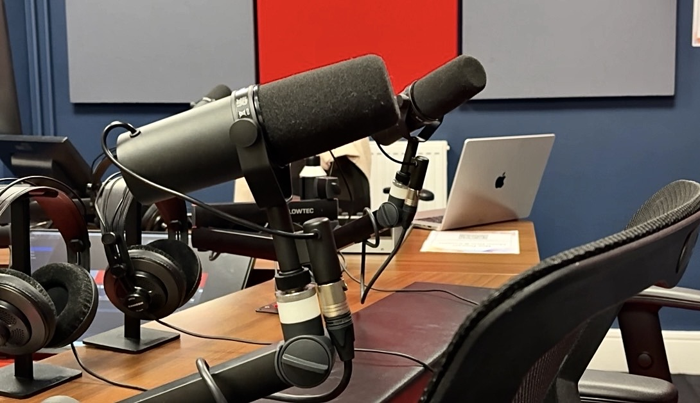

Visual Podcast / Watch the Podcast
Ease Talks:
Seen, But Not Ready
A visual podcast about read visibility, reply pressure and the small social meanings created by messaging interfaces.

Watch for
How small interface signs, such as blue ticks, timestamps and notification previews, change the social meaning of waiting and replying.
Project focus
Not a battle of apps, but a story about what happens when attention becomes visible before a reply is ready.
Format
A visual podcast combining group discussion, recreated chat examples, subtitles, screen recordings and concept cards.